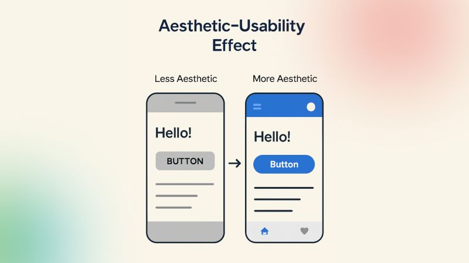

To me, systems thinking is a way of understanding systems (technological or otherwise) in our world by paying attention to how things interact with one another in certain contexts rather than thinking about isolated parts. It makes the most sense in my mind by imagining systems thinking as looking at a process forwards, backwards, from above, from below, and both inside and out. One piece of the system doesn’t hold much weight, but when we think about how all of the pieces interact, we gain a much deeper understanding of the system as a whole.
This aligns perfectly with the idea presented in the course reading that system components “can best be understood in the context of the relationships with each other… rather than in isolation” (Wilkinson, 2011). Systems aren’t static and it’s rare that any given system takes the same steps to the same product twice. Focusing on one point isn’t just inefficient, but it likely won’t get you very far when it comes to systems analysis and design.
Systems Thinking Vs. Linear Thinking
This is a big change from how we normally think in our day-to-day lives, as most of our issues that we face on a daily basis are easily resolved and we can often pinpoint the cause immediately. For example, if your smoke alarm is beeping periodically, you know that the solution is a new battery. While this comes from experience, it also comes somewhat intuitively from the simplicity of the situation. If someone had just moved into a house with smoke detectors for the first time, I don’t think they’d have to Google why the alarm was beeping. This same type of intuitive resolution is much rarer in systems thinking. The same reasoning doesn’t carry over to complex systems like cloud platforms or social media ecosystems where issues can come from the slightest bug. Looking at how things interact becomes increasingly important at this point.
We spend most of our time thinking linearly. There’s not much in our lives that asks more of us than that. The issue is that we often try to think linearly about every issue we face. In IT, we may want to think about a problem in a way that lets us find its cause and its solution, but working with complex systems demands more of us. Complex systems produce complex issues. When we apply linear solutions to complex problems, these solutions often only address the visible issue rather than the underlying systemic issue. This often creates a cycle where quick fixes bring about new issues, leading to more fixes and scaling complexity over time.
I personally suffer from the result of this kind of thinking whenever I play a video game called League of Legends. The developers started as a small company but rapidly grew in size. People began expecting a lot out of them and as a result, many of the early bugs were not properly addressed. The development team simply coded around the issues instead of making a proper effort to resolve them. This scaled over the course of about 15 years and has gotten to the point where they’re advertising an optimized version of the game that will be released in 2027 which is going to be them fixing the spaghetti code that has been a result of the constant linear thinking the team has been doing. If they were to utilize system thinking back in 2009, they would probably be spending their time in a more efficient manner.
Another reason why linear thinking is constantly used is that systems thinking demands more effort and discipline. It demands that you consider multiple perspectives, anticipate indirect effects, and tolerate ambiguity. This is rarely enjoyable, especially in environments where success is measured by speed rather than depth. This results in linear thinking becoming the default, even when it isn’t the most effective.
In my opinion, one of the most important mindset shifts anyone can have when working with complex digital systems is found in recognizing that not all problems should be solved immediately. If you really want to fix a problem and ensure that it doesn’t happen again, you should slow down to analyze the relationships that caused the problem. While it may seem inefficient at the moment, it prevents larger failures in the long run.
Why Model-Based Approaches Matter in Complex Digital Systems
While systems grow, it becomes increasingly important to understand relationships conceptually and manage them in practice. Model-based approaches become much more necessary at this point. By creating structured representations of systems, engineers can move beyond abstract thinking and work with something more concrete, shared, and easy to analyze. A model-based approach relies on formal models (i.e. diagrams, simulations, and structured frameworks) to represent how a system is organized and how it should and does behave. In digital system environments, this is insanely important, as digital systems evolve rapidly and constantly along multiple layers of interaction that are hard to track normally.
The biggest advantage I’ve noticed when it comes to the model-based approach is the ability to make complexity visible and digestible. With complex systems, it tends to be easier to define them by the relationships they contain. Models expose these connections, allow everyone to understand how different parts of any given system influence each other. According to Friedenthal, Moore, and Steiner (Friedenthal et al., 2015), model-based systems engineering enables a more precise and integrated representation of system structure and behavior, which is critical for managing complexity more efficiently.
Another big benefit of model-based approaches is the improved communication. When we’re working with massive systems with tons and tons of stakeholders, communication can become nearly impossible. However, when we utilize models as a common language, the communication gaps are bridged, and teams are able to work in parallel much more easily. As noted in the Survey of Model-Based Systems Engineering (MBSE) Methodologies, Model-Based Systems Engineering supports better stakeholder communication by replacing ambiguous text-based documentation with consistent and visual system representations.
In a system analysis course I was enrolled in previously, we spent much of the quarter creating and refining system models. The biggest thing I noticed was that no matter what change I made, there would always be a better, quicker way to design the system. After spending days passively refining the system in my head, I would sit down and implement the change, only to be met with the fact that there could still be a better way to design the system. This goes to show that most system complexity comes from poor design choices in the early stages of designing the system. Model-based approaches let us refine systems down to the human limit with relative ease. Being able to see and feel what’s wrong without having to launch a system into use allows rapid improvement on every front of a system.
In all, the model-based approach lets us bring clarity to complexity. We see every aspect of the system, and it allows us to work within it rather than working alongside it separately.
To conclude, linear thinking within complex environments is understandable, but we should always be ready to switch our though processes to a more systems focused approach. When thinking about complex systems, we should be thinking in more complex ways. When we combine this with a model-based approach, we gain a powerful foundation for addressing any problem we find within the most complex systems.
Module 1.2 Blog Post
The Systems Development Life Cycle
The systems development cycle acts as a method of realizing the natural ways systems are developed. Certain models follow different life cycles, all ending in the retirement of the given project. It supplies structure to the creation and upkeep of systems as well as ensuring project success by aligning technical goals with user needs.
With the various projects we take on within system design, we are supplied with different life cycle models to help us visualize how system development navigates throughout different stages. Throughout the coming sections, we will discuss the characteristics, advantages, drawbacks of each proposed life cycle model.
Linear Life Cycle Models
Linear system design utilizes a life cycle model that is executed in a simple linear sequence. The execution of each stage is visualized using a lifeline, and the interactions show the order of execution within the stages. There is little variation in this approach, and only one process is often executed within each stage. Each stage is executed in a specific order, and each stage is executed after the completion of the previous stage, resulting in (typically) no route existing to return to a previous stage. The linear system life cycle is mainly used for projects in which the original needs are very easy to understand and are not likely to change.
These pose as rather strong advantages in the grand scheme of things, but the linear life cycle model suffers from some rather interruptive disadvantages. Firstly, it is not suitable for any sort of large, complex system or project (Holt). Its simplicity is a big strength, but it makes it mainly useful for small, straightforward projects. It’s not suitable for things comparable to systems engineering, as those systems do not function linearly.
Iterative Life Cycle Models
The iterative life cycle model has the system pass through the stages of development several times, each of which is known as an iteration. Each stage is visualized using a lifeline and the interactions show the order of execution within the stages. The iterative life cycle model operates on the assumption that if a linear life cycle model works for short projects, then it is possible to break a large, complex system into a series of shorter, simpler projects. This is the backbone of the iterative life cycle and shows us the reasoning behind the iterations.
These iterations represent a single pass through the stages, beginning at the concept stage and moving through the cycle until after the production stage and into utilization. The final result of each iteration is a workable functioning version of the final system that can be deployed in the target environment. Iterative system design is utilized heavily in the software development world, rather than on large systems projects, due to the perceived ease of creating software releases.
Like the other models, iterative system design has both advantages and disadvantages. One of the main advantages is that each iterative release of the system is a more complete and typically improved version compared to the version that came before it. Along with the fact that each iteration takes a short period of time to be fully developed, another benefit of iterative system design and why it is often used in software development is that if a release of the system does not work, it is easy to go back to a stable release to restore functionality. Iterative system design plays well with the “agile” approach that a lot of development teams have adopted.
While this model has strong advantages, the few drawbacks it has keep it from being utilized within every use case. A big drawback is that the nature of the design method puts a large emphasis on publishing releases on time rather than waiting for a complete release that is fully functional from the beginning. Another issue with iterative system design is that when applying the iterative approach, needs may be changed frequently by stakeholders. On top of this fact, iterative life cycle models rarely have a robust needs process in place.
Incremental Life Cycle Models
The incremental life cycle model is comparable to the iterative life cycle model, but certain features make it useful for different systems. Its most defining characteristic is that multiple passes are taken through the stages so that the final system is deployed in several releases. Incremental models, along with iterative models, are known as evolutionary life cycle models, as subsequent forms of the system are evolutions of those previous. The concept stage is executed as the first stage but will cover all the system needs. This sets the framework for the system, allowing developers to take different subsets of the needs and produce a partial solution that does not compromise the whole system and can be deployed in the target environment. The execution of each stage of the life cycle is visualized using a lifeline and the interactions show the order of execution of the stages. This results in the system being deployed in an incremental fashion, rather than as a single release as in the case of the linear life cycle model.
Like the models that came before, it has advantages and disadvantages. Firstly, a big advantage is that the final system can be seen to be working and the system is deployed, albeit in a reduced form. This makes it good for large, longer projects, where functionality of the system is required before the end of the project. The main disadvantage, on the other hand, is that not all systems can be broken down into subset of the overall system.
Module 2.1 Blog Post
Human Perception in Design
People engage with environments (both physical and digital) based off of their previous experience within environments similar. If you go to a website, you’ll engage with it in the way you'd expect a website to function. A great explanation of this was the textbook example of remembering a foreign kitchen having a sink when in reality it did not or walking out of a restaurant thinking you paid when in reality you forgot, simply due to the fact that you've gotten used to the environment functioning that way. This carries over into the digital environment in the form of users engaging with websites or applications in the way they expect them to function. This creates abstract guidelines in system design, where designers need to design digital environments in a way that conforms to the standard expected by the users. Buttons should be colored consistently, navigation arrows should be placed with their meanings in mind, and users should be able to rely on the designers remaining consistent throughout the entire environment.
A very interesting point I found in the text regarding habituation is the fact that they referenced "social media burnout" and supplied a 13-year-old reference. They mention how people get tired of seeing their friends comment on the smallest things throughout their day, but I feel as if social media has done away with that habit entirely. I personally don't have anyone on my social medias that posts about every little thing they do, but I believe the burnout has changed form. Modern digital environmental design is centered nearly entirely around stimulating the users, ensuring they don't stop using whichever social media platform gets them addicted worse than the others. I've found that my social media burnout now comes from the sheer quantity at which my peers can put information in front of me. While we've done away with the little updates, I still get on my phone and see their various posts across Snapchat stories, Instagram notes, Instagram stories, Instagram posts, TikToks they've reposted, Instagram reels they've reposted, Tweets they've tweeted and retweeted, all in a constant stream. The current digital environment makes sure that even if you don't use a platform, your friends on that platform still use it for you. I think that this new form of burnout comes quicker and harsher, but it's more likely to get people off social media entirely. At the time of writing this blog post, I deleted TikTok this morning because I was sick of habitually opening it every morning and seeing the nonsense my mutuals reposted. While I know I'll redownload it eventually, this happens often and I find myself feeling a lot better whenever the app is off my phone.
In the reading, immediately after the point of social media burnout, they bring up the topic of attentional blink. I find this to be incredibly common in this age of short-form content. The attention span of the average social media user is so incredibly fried from overstimulation that I feel as if they're in a constant state of attentional blink. They watch one video and before they have a second to process it, they've scrolled to the next. This type of environmental design needs to be accounted for if we plan on making engaging digital environments. If we slow our environments down, will people with the average modern attention span not engage with the environments, or will they finally slow down enough to properly consume the media that is being placed in front of them?
The Gestalt Principles and You
Returning to the Gestalt principles we discussed in our previous system design courses, we're shown how the principles previously introduced to us conceptually take form and affect our experience within digital space. We look at objects in proximity of what grabbed our attention, we may ignore objects if they don't appear similar to the objects surrounding it, and backgrounds may be disregarded if the figure present in the foreground takes enough attention. These simple principles, when thought of in the sense of digital design, are found everywhere we look. While they may seem like unintentional design aspects that we should avoid accidentally implementing, they're purposefully used constantly whether we notice them or not. For example, the webpage that I'm reading my textbook on groups all the chapters into one section. This falls into the proximity principle. While it may seem obvious, I believe that's just because it is the principle being utilized in its purest form.
Information Hierarchy
In chapter 3 of Designing with the Mind in Mind, the topic of structured information is discussed thoroughly. We are reminded that not all information is important information, especially when we’re working with large quantities of data. If you have a set of data and you need to display it for a large group of people, the data that most of the people need should be more prominent. This does not mean that you do away with the less important data entirely, but it does not need to be structured the same. When working in IT, you realize that a lot of settings menus have an “advanced” section in which more specific tools are provided for you. The tools aren’t packaged separately and hidden away, but they also aren’t thrown in with the more commonly used tools. Since only a specific group of people will need the tools, they’re simply moved to a section under the more common tools. This lets the common user easily find what they’re looking for, as it doesn’t crowd the general section with niche tools. Data should be presented in the same way, as there are data points that only a select few will need. This aligns closely with the concept of information hierarchy, where the concept of eliminating needless words and repetition makes information more consumable (Johnson, 2021). A very common issue in the presentation of information lies within the readability. While moving more niche information to sub-menus can increase comprehension, eliminating redundancies also makes information much more consumable.
Accomodating for Peripheral Vision in Design
Accommodating for screen size and its relation to peripheral vision is very important for good design. The reading mentions the concept of users only focusing on the approximate 1-2cm surrounding the mouse position, with the rest existing purely in the users’ peripheral vision. This leads to error messages and other pop-ups not being seen if the user isn’t deliberately looking for it. A great example of this is on the Windows 11 login screen. If you have caps lock on, a very small, white strip of text appears just out of your field of vision informing you that you left caps lock on. The issue lies in the fact that this message looks the exact same as the message that appears when you incorrectly enter your login information. There have been many times where I didn’t notice the caps lock message, entered my information, saw the strip of white text out of the corner of my eye, figured it was informing me that my login credentials were incorrect, and proceeded to type my information in several more times until finally looking down at the message realizing my mistake. Accounting for peripheral vision is incredibly important when it comes to environmental design, as it completely changes the way people interact with your system.
Module 2.2 Blog Post
Mental Models and Their Influence on User Interaction
Mental models impact the way we live our lives on a daily basis, saving us the effort of thinking about things that will likely be the same as they have been in the past. When we go about our day, there are some things that are consistent to the point that we don’t even think twice about them. The same mental pathways and assumptions develop as we utilize systems on a regular basis. This means that when we design systems, we can assume how people will interact with the system based off of how most systems function. When users interact with a system for the first time, they rarely read some sort of manual or tutorial of how to use it. Imagine, for example, opening a social media platform for the first time and being given a walkthrough of how to utilize all of the features the platform has to offer. While they do this to a degree with little checklists that let you learn the platform at your own pace, it’s completely optional and most people don’t utilize it consciously.
Assumptions of what does what when we use a platform have been developed since the very first time we interacted with anything similar. Symbols such as a trash can or a magnifying glass let us know we can delete something or search a database. This is something that is learned once and applied to similar situations forever. By keeping this in mind, we can develop systems that are intuitive for users to engage with and navigate.
When a system operates in the way that the user expects, navigation becomes effortless, decision-making becomes instant, and the users feel comfortable and confident within the system. If these facts aren’t kept in mind while we design systems, users will experience great levels of confusion during their time within the system. Systems that function how we’d expect a system to function are easy to use and leave us satisfied by the time we’re done using them. In my time working with open-source software in IT, I’ve interacted with a decent quantity of systems that don’t really function exactly how I’d expect, and it made me completely do away with the system, even if it benefitted me greatly. People are a lot less likely to use systems if they are inconvenient.
In all, successful interfaces align with user expectations. By keeping what users expect in mind, we can create systems that are easier, more efficient, and more enjoyable to use.
Interface Consistency and System Feedback
When it comes to system and interface design, the usability greatly depends on how easy it is for users to understand and interact with the system. The two aspects with the biggest impact on this usability are consistency in the interface and the feedback that the system gives you as you interact with it. When interfaces act in ways that users can predict, they’re able to complete tasks with less effort and frustration. On the other hand, bad design increases cognitive load by forcing the users to spend energy figuring out how to use the interface. Concepts like Tesler’s law and principles from Designing with the Mind in Mind show us why design choices have such a large impact on the user experience.
Interface consistency improves usability mainly because users naturally depend on patterns and prior experience when interacting with familiar systems. Consistency means that similar actions yield similar results throughout the entire system. When a user recognizes a familiar pattern, they’re able to predict how the interface will respond without having to stop and think about every little action they take. A principle that we went over in the reading explains that humans recognize patterns intuitively and very quickly, allowing designers to take advantage of this by creating predictable layouts and interactions. An example of this is how most websites place navigation menus at the top of the page or along the left side. Users know that if they click the logo in the upper left corner of the game, they’ll return to the home page, and that if they click the shopping cart icon, they’ll be shown their purchases or saved items. These icons only work because the majority of users have developed mental models through repetitive exposure to similar systems.
While consistency builds user confidence and allows a seamless user experience, inconsistent design breaks these expectations and creates confusion. I know that personally, I’ve noticed that save icons are rarely consistent across programs. In Adobe programs, it’s located within a dropdown menu that has several different options to save your file, along with a separate section to export your file. In Microsoft Office programs, it varies between a button labeled “Save”, a floppy disk icon, and a cloud icon. This inconsistency forces us to briefly pause to figure out the correct course of action every time. While this may seem like a small inconvenience, these repeated interruptions make these systems feel poorly designed and slow to use.
It’s a known fact that consistency is important in applications. Users interact with these apps quickly, and they expect to understand what is going on right away, without any sort of distraction. Apps like Instagram and Spotify have layouts that're the same across different screens, allowing users to navigate new areas of the system with an operative level of familiarity. The navigation icons are always in the place, the gestures work the same way, and similar actions give similar results. Because users do not have to keep relearning how to interact with the app, they are able to focus on what they want to do, whether that’s looking at content or listening to music. System feedback is also very important for usability. Users need to know that their actions were successful. Feedback can be something that they see, hear or read that tells them what the system is doing.
Without feedback, users are not sure if what they did worked, if the system is loading or if something went wrong. There is a principle from Designing with the Mind in Mind that says people can only pay attention to so much at a time. As we learned in the previous module, due to the limits of peripheral vision, users cannot look at every piece of information on a screen at once. This means that the interface needs to show them what is important, and draw their attention to it if it’s in a location where they may not immediately see it.
Effective feedback helps users understand what is going on with the system without the users having to think about it. A loading indicator is an example of feedback, as when users upload a file or load a webpage, a progress bar or spinning icon tells them that the system is working on processing their request. Messages with phrases such as "File uploaded successfully" or "Password changed" also help reduce uncertainty. Even small things, like a button changing color when clicked help users know that the system received their input. If the feedback is not good, it can be incredibly frustrating for the users to navigate as users need to be able to repeat these actions. Many people have clicked a button several times because it seemed like nothing was happening, causing the system to do all of the things they clicked at once, causing errors on the back end of things. Things like this happen because the interface did not tell the user what was going on. I have been to websites that seem frozen while they are loading. Without a loading indicator or status message users might think the site is broken and refresh the page over and over or they might just leave.
The problem is not how long it takes to load. That the system is not telling the user what is going on. Clear feedback helps users feel confident when they are using the interface. These issues are connected to load, which is how much mental effort it takes to do something. Good design makes it so users do not have to think much so they can focus on what they want to do. Poor design makes users think much more than they need to because they have to remember things, look for controls, or fix mistakes that could have been prevented by implementing better practices during the system development. Tesler’s Law says that every system has some complexity that cannot be avoided. Designers cannot make the inherit complexity of a system go away. The only decision they make is whether the user or the system will deal with the complexity. A good interface design puts the complexity on the side of the system, so using it feels simple and easy to understand. For example, interfaces that are cluttered, lack any sort of labels, or use inconsistent terms make users spend more time trying to understand what is going on. Online forms that have many steps or give vague error messages also make it harder for users to accomplish the task at hand. Instead of making it easy for users to do what they want, these systems make simple tasks feel exhausting. Effective system feedback reduces uncertainty, as it helps users focus on what they need to. Tesler’s Law reminds designers that complexity is always going to exist within any system they create, but good design can make it so users do not get overwhelmed. When systems make it easier for users to navigate the complexity of systems, it makes interactions faster, more intuitive, and less frustrating. Consistency and feedback are key to making any system or application inherently easy to use.
Module 3.1 Blog Post
Interface Layout and Control
When it comes to the layout and control of a system, the gravity of both concepts in relation to the user needs to be kept in mind at all times. When users are engaging with digital products, the placement of buttons, menus, navigation tools, and even images directly influences how quickly users understand a system and how efficiently they complete tasks within that system. When users feel comfortable with the layout and their control over the aspects of said layout, they are more likely to continue to use the system. For example, the visual hierarchy of interface layout lets users know what has been deemed most important by the designer. When we give the users one less thing to think about, they are much more likely to focus on what we’re offering them instead of how frustrating our website is.
Controls and their responsiveness should also be prioritized when designing a system, as it takes one unresponsive aspect of a design to derail the user experience completely. When we give users the tools to navigate our system with confidence, they’re once again more likely to focus on what we’re offering them. Users learn patterns quickly, which makes it important to remain consistent throughout our design. The search bar on one page needs to be in the same location as the search bar on the next. I’ve used several websites (which are all government websites now that I think about it) where the difference between pages could throw you off so badly you nearly forgot what you were on the website for. There have been times when I thought I was redirected and kept clicking back to make my navigation choice again. Issues like this will quite literally drive traffic away from our systems, which make all of our effort beyond this point useless.
The Various Laws of UX
UX design within digital products can either make or break the user experience. User experience is greatly influenced by psychology due to the simple fact that the way people feel about something directly affects how they interact with it. This applies to technology as much as it applies to anything else in life. Designers within the field aren’t just responsible for making products that function, but also for making those products intuitive, appealing, and easy to use. The three principles that I’ll be breaking down in this section of the blog are the aesthetic usability effect, the Von Restorff effect, and Postel’s Law. Each of these principles show us a different aspect of user behavior and explain how meaningful design can improve the user experience.
The aesthetic usability effect refers to the tendency users have to perceive visually attractive products as easier to use. Two systems could have identical functionality, but users are more likely to enjoy using the one that looks more modern, or more so whatever aesthetic they deem to be more efficient. This principle is crucial due to the importance of first impressions in product usage. I know personally that if I don’t enjoy an application the first time I use it, the chances of me picking it up again are slim to none. Like many things in life, a polished appearance comes across as more trustworthy, organized, and reliable. Attractive design evokes a positive emotional reaction, making users more patient if they encounter any sort of inconvenience within the system. The first application that capitalizes on this principle in my mind is Spotify. Spotify uses a clean layout, consistent spacing, and an intuitive placement of features that make the whole application feel much more responsive. If any of these things were not implemented in the application, there’s a good chance I would’ve switched to Apple Music by now. This also highlights the emotional aspect of design. A nice interface makes users comfortable, while poor design makes them feel frustrated and confused. It’s an interesting principle that makes perfect sense the second you start to look into it.

Image Source: LinkedIn, Vikas Chouhan
Another important principle is the Von Restorff effect, which shows us that if items stand out, there’s a higher chance that the user will remember them (Budzinskity, 2017). This is used to direct the attention of users to more important elements. Things like contrast, spacing, size, and color all contribute to the noticeability of graphical elements within our designs. In today’s digital age, users have grown accustomed to blocking out certain aspects of design that they’ve deemed unnecessary over time, and it’s important that the critical features of our systems don’t get lost the same way. This principle is commonly used for “call-to-action” buttons like “Register” or “Purchase.” It would be challenging to find a digital interface in which the “Purchase” button was difficult to locate. Bright colors against a neutral background grab the attention of the user immediately. This principle is completely built off of the fact that the human brain will automatically single out whatever doesn’t fit in with its surroundings. As someone who shops online a lot, I’ve noticed this principle without ever knowing its name, simply because it’s such a common method to get people’s attention. I’ve also experienced systems in which this principle is overused, and a website becomes overstimulating due to pulling your attention in so many directions.
Image Source: Shahil Manandhar, Yarsa Labs
Next, we will look into how usability depends on how systems respond to human behavior. Postel’s Law states that systems should be conservative in what they send and flexible in what they accept. This means that interfaces should be incredibly tolerant of user mistakes and adapt to different input styles whenever possible. The opposite of this would be forcing users to interact with the system perfectly and not granting any sort of output if they stray from the norm whatsoever. This principle is incredibly important because users interact with systems in very bizarre ways. Anyone who’s worked in customer service knows that nearly every customer has a different way of going about the service process. Some people follow the common, logical flow of problem resolution with minor detours here and there, and some people make you question how they’ve made it this far in life. While humans can adapt to these individualistic behaviors easily, systems are static and need to be given an artificial sense of dynamicity. When systems are forgiving of user input, users feel more confident with the system. On the other hand, inflexible systems create unnecessary barriers. A great example of this is a password system that doesn’t tell you what’s required of the password, simply that it isn’t complex enough. Rigid systems negatively affect usability, while flexible systems encourage user input and aid users in accomplishing whatever task they need efficiently.
A big perk of Postel’s law is how inclusive it is. When we have public facing systems, we never know who will be interacting with it. Younger people may struggle with complex instructions while older people may struggle with technicality. Designing systems that adapt to everyone makes the technology more accessible to a broader audience.
Image Source:
Medium.com
Module 3.2 Blog Post
Introduction
The satisfaction we receive when interacting with digital systems nearly completely depends on the feedback of the system. Just this past week, I was registering for some summer classes at a community college back home, and I entered “Art” into the class search, as I need a couple more fine arts credits for my degree. I was immediately met with a loading wheel that proceeded to freeze after 3 seconds of spinning. The only way I knew my browser was still processing information was the page being unable to refresh, signifying that it was loading which is something not a lot of people would notice. After about 45 seconds, I got on my phone because I understood that I just asked for a lot of information from a database with seemingly poor infrastructure. After watching 3 or 4 TikToks, the page finally loaded and I was met with a big red error at the top explaining that results were left out due to such a large request. As I scrolled through the results, I noticed that they only showed me 10 results, and no page selector to view the sequential results. I genuinely couldn’t believe that someone developed a system this poorly. I then made the mistake of loading all the results and freezing my browser about 4 more times before I gave up and said I’d do it tomorrow. I still haven’t done it.
All this is to say that when it comes to systems, feedback, responsiveness, and motion determine how we feel about not only the system, but the organization behind it. The poor system reminded me that I’m working with a community college, and it motivated me to work harder so I don’t have to work with community colleges anymore. The feedback was delayed, the system became unresponsive, and the motion of the loading wheel ceasing left me feeling confused and frustrated. I believe that anyone without a technical background would’ve immediately quit trying to query the database and just called their advisor to find the classes for them. It made me genuinely frustrated, which is the exact opposite of what we strive for when designing systems. Intentional, well-designed interaction patterns influence user emotion, improve usability, and create trust.
The Role of Feedback Timing and Responsiveness
When your average user makes a search or clicks a link on your webpage, they expect an immediate response. In their mind, their Wi-Fi is perfect, and it’s your fault that their page is not loading. This makes it the designers’ job to give the user a response, even when it may be their Wi-Fi that’s slowing your website down. Giving them a loading screen explaining that traffic is slowed during high volume hours or showing a progress bar are just a couple of examples of keeping people patient with your system. Delays (user or server side) create uncertainty with the product and result in users abandoning the system altogether. The Doherty threshold addresses this issue by informing system designers that productivity increases when systems respond within approximately 400 milliseconds (.4 seconds) (Yablonski, 2023). The assigned reading makes note of several factors that can determine the performance of websites and apps, with page weight being cited as the most significant. When querying databases, the page weight can vary, and you have the potential to end up in situations like I recalled in the introduction to this blog post.
Fast feedback gives the user confidence in the system. It lets them do what they need to do quickly and doesn’t slow them down in any capacity. This is what companies need to keep in mind when they’re thinking about customer retention. If you run an e-commerce business and your website is slow, you’re going to make a lot less sales than if your website was quick and responsive. Slow responses plant doubt in the users’ mind, and not just about the system. As I mentioned in the introduction, I was reminded that I was working with a community college and that frustration I felt with that system will likely carry into the next conversation I have with a representative of that college. The way a system feels doesn’t just go away immediately, and it can result in a lot of lost business.
Motion and Animation as Communication Tools
The purpose of motion in UX is to guide user attention, create continuity between sections of a system, and explain transitions and element relationships to users. UX design is very easy to make overbearing, so most designers use it sparingly. A benefit of using it sparingly is the fact that it’s guaranteed to grab the user’s attention when it is used. If something is moving on an otherwise static page, everyone is going to look at it. I use a free, open-source software to visualize my hard drive storage, and the developers strategically placed a “donate” button in the top right corner of the program that will occasionally shake for 2-3 seconds. If it were shaking all the time, I would be very annoyed and probably look for a different program. On the other hand, if it never shook, I likely would never realize it was there, as the button is very small. Conscious design like this acts as a deal between the user and the developer. The developers understand the user experience, and they would never do anything to harm it, but at the same time, they need donations to keep the program free and expect the users to understand that. This small detail has kept me using the program, and the genius of it has inspired me to donate once I get a paying job.
In the year 2000, there was a usability expert by the name of Jakob Nielsen. He “described the tendency for users to develop an expectation of design conventions based on their cumulative experience from other websites. This observation, which Nielsen describes as a law of human nature, encourages designers to follow common design conventions, enabling users to focus more on the site’s content, message, or product.” (Yablonski, 2023) Jakob’s law reminds us that straying from user expectations for the sake of uniqueness or design can backfire, leaving users lost and confused, wondering why your website doesn’t work like all the websites they’ve used before it.
The Peak-End Rule
To put it simply, people remember experiences based on the point in the experience where their emotions peaked, and how they felt when their experience ended. (Pilat & Krastev, 2026) This extends beyond system design, and into our real lives. Think of a rough experience you went through, where you were rewarded in the end. You likely don’t remember the experience as painful, but instead as a happy step in your life. On the other hand, think of a happy experience you had where the brutal ending outweighed any happiness you had at any point within the experience. Since your peak emotion was negative, you likely remember the whole situation as either a waste of time or a mistake. Memories are stored and recalled based on how we remember feeling, and we most often remember the peak, and the end.
In system design, it’s important to understand what the peak of the user experience is, and what the end of the user experience is. I think of Canvas’ simple little emoji celebration when you submit an assignment on time. When I’ve worked on a paper for 6 hours and I finally get it in, due to the low emotions of writing that paper, the little emoji celebration Canvas gives me is genuinely the peak of my experience. There have been times when my professor doesn’t have a late penalty and I want to put an assignment off, but I know if I turn it in late, I won’t get the little emoji celebration. By understanding the monotony of the assignment, they know that a small celebration at the end will encourage students to return to the platform and think of Canvas in a better light. While it’s an odd example, it’s an example I believe to be true.
Image Source: Rishé Pierre, 2026
Ethical Design and Persuasion
Image Source: Rishé Pierre
When you think of design in any capacity, chances are you don’t immediately think of the ethics behind it. Users are not dumb, and most of them can tell when system design is predatory and manipulative. While deceptive systems are one thing, rewarding users and informing them of things they may genuinely be interested in are persuasive design techniques that are not predatory at all. While there is a way of “rewarding” users in a predatory manner, it is pretty obvious when that is what is happening. We all interact with predatory design practices whether we know it or not. Most social medias have adopted the “infinite scroll” where your home feed literally never ends. In an environment where income is directly linked to how much a user scrolls through ads, users quickly become the main source of profit. Another example would be false urgency. This is something that I’ve noticed many brands and even institutions do on accident. “False urgency works on the basis of loss aversion which is the notion that users prefer to avoid losses over acquiring gains.” (Symran Bhue, 2024).

 Image Source: Rishé Pierre, 2026
Image Source: Rishé Pierre, 2026
 Image Source: Rishé Pierre
Image Source: Rishé Pierre
 Image Source: Rishé Pierre
Image Source: Rishé Pierre